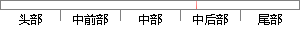

其中tcb_stk_ptr就是每个任务的栈指针，该栈指针指向每个任务的栈地址；
片段位置图

相似结果
相似片段：使用uc/0s—II的栈空间校验函数,可以确定每个任务...结构,其中第一个成员变量就是保存的任务堆栈指针。...就预先将该任务的pc指针和返回地址lr都指向函数入口...
| 标题 | 《基于ARM的二取二安全型联锁计算机的研究与设计》 |
| 对比库 | 中国学位论文全文数据库 |
| 作者 | 周鸿海 |
| 机构 | 南开大学 |
| 分类 | 软件工程 |
| 年份 | 2005 |
| 相似率 | 64.52% （轻度抄袭） |
※ 片段修改建议 ※
近似词参考：- 任务：使命 义务
- 地址：地点
- 每个：每一个
- 就是：便是
- 其中：此中 个中
系统自动生成语句： 此中tcb_stk_ptr便是每一个使命的栈指针，该栈指针指向每一个使命的栈地点；
注：本片段修改建议为系统自动生成，仅供参考。